1. Introduction to Canvas
<canvas> 是 HTML5Newly added, one that can use scripts (usuallyJavaScript) to draw images inHTMLelement.
It was initially by Apple internally using its ownMacOS X WebKitlaunched, for applications to use components like Dashboard andSafaribrowser use. Later, someone throughGeckokernel browsers (especiallyMozilla和Firefox)，Opera 和 Chromeand the Web Hypertext Application Technology Working Group suggested using this element for next-generation web technologies.
CanvasisHTMLa drawable area defined by code together with the height and width attributes.JavaScriptCode can access this area, similar to other generic two-dimensionalAPI, through a complete set of drawing functions to dynamically generate graphics.
Mozilla programs have supported it since Gecko 1.8 (Firefox 1.5)<canvas>, Internet Explorer from IE9<canvas>. Chrome and Opera 9+ also support<canvas>。
2. Basic Usage of Canvas
<canvas id="tutorial" width="300" height="300"></canvas>
2.1 <canvas>Element
<canvas>looks the same as<img>the tag, except that<canvas>has only two optional attributeswidth、heigthattributes, and nosrc、altattributes.
If you do not<canvas>setwidht、heightthe attributes, then by defaultwidthis 300,heightis 150, and the units are allpx. You can also usecssattributes to set width and height, but if the width and height attributes are inconsistent with the initial ratio, it will appear distorted. Therefore, it is recommended to never usecssattributes to set<canvas>the width and height.
Replacement Content
Because some older browsers (especially IE browsers before IE9) or browsers do not support the HTML element<canvas>, on these browsers you should always be able to display replacement content.
Supporting<canvas>browsers will only render<canvas>the tag, and ignore the replacement content inside. Browsers that do not support<canvas>will directly render the replacement content.
Replace with text:
<canvas>
你的浏览器不支持 canvas，请升级你的浏览器。
</canvas>
用 <img>Replacement:
<canvas>
<img src="./美女.jpg.html" alt="">
</canvas>
The closing tag</canvas>cannot be omitted.
与 <img>Unlike the element,<canvas>the element needs a closing tag (</canvas>). If the closing tag does not exist, the rest of the document will be considered replacement content and will not be displayed.
2.2 Rendering Context (The Rendering Context)
<canvas>will create a fixed-size canvas and expose one or morerendering contexts(brush), to userendering contextto draw and process the content to be displayed.
We focus on the 2D rendering context. We will not study other contexts for now. For example, WebGL uses a 3D context based on OpenGL ES ("experimental-webgl").
var canvas = document.getElementById('tutorial');
//获得 2d 上下文对象
var ctx = canvas.getContext('2d');
2.3 Checking Support
var canvas = document.getElementById('tutorial');
if (canvas.getContext){
var ctx = canvas.getContext('2d');
// drawing code here
} else {
// canvas-unsupported code here
}
2.4 Code Template
Example
Try it now »
2.5 A Simple Example
The following example draws two rectangles:
Example
Try it now »
3. Drawing Shapes
3.1 Grid(grid)and coordinate space
As shown in the figure below,canvasthe element is covered by a grid by default. Generally speaking, a unit in the grid is equivalent tocanvasa pixel in the element. The origin of the grid is the top-left corner, with coordinates (0,0). The position of all elements is positioned relative to the origin. Therefore, the top-left corner of the blue square in the figure has coordinates (x, y), which is x pixels from the left (X-axis) and y pixels from the top (Y-axis).
Later we will cover the translation of the coordinate origin, rotation of the grid, and scaling, etc.

3.2 Drawing Rectangles
<canvas>Only one kind of native graphics drawing is supported:Rectangle. All other graphics require generating at least one path (path). However, we have many path generation methods that make it possible to draw complex graphics.
canvas provides three methods for drawing rectangles:
- 1、fillRect(x, y, width, height): Draw a filled rectangle.
- 2、strokeRect(x, y, width, height): Draw the border of a rectangle.
- 3、clearRect(x, y, widh, height): Clear the specified rectangular area, and then this area will become completely transparent.
Explanation:These 3 methods have the same parameters.
- x, y: Refers to the coordinates of the top-left corner of the rectangle. (Relative to the canvas coordinate origin)
- width, height: Refers to the width and height of the rectangle to be drawn.
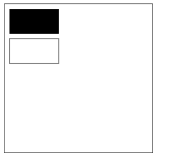

4. Drawing Paths (path)
The basic element of graphics is a path.
A path is a collection of points of different shapes formed by connecting line segments or curves of different colors and widths.
A path, or even a subpath, is closed.
Using paths to draw graphics requires some additional steps:
- Create the starting point of the path
- Call drawing methods to draw the path
- Close the path
- Once the path is generated, render the graphics by stroking or filling the path area.
The following are the methods needed:
-
beginPath()Create a new path. Once the path is created successfully, the graphics drawing commands are directed to the path to generate the path.
-
moveTo(x, y)Move the pen to the specified coordinates.
(x, y)Equivalent to setting the starting point coordinates of the path. -
closePath()After closing the path, the graphics drawing commands are redirected to the context.
-
stroke()Draw the shape outline with lines.
-
fill()Generate a solid shape by filling the content area of the path.
4.1 Drawing Line Segments
4.2 Drawing a Triangle Border
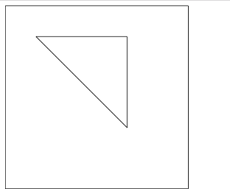
4.3 Filling a Triangle

4.4 Drawing Arcs
There are two methods to draw arcs:
1、arc(x, y, r, startAngle, endAngle, anticlockwise): with(x, y)as the center, withras the radius, fromstartAngleradians start toendAngleradians end.anticlosewiseis a boolean value,trueindicates counterclockwise,falseindicates clockwise (default is clockwise).
Note:
The degrees here are all in radians.
0Radians refer to thexpositive direction of the axis.radians=(Math.PI/180)*degrees //角度转换成弧度
2、arcTo(x1, y1, x2, y2, radius): Draw an arc based on the given control points and radius, and finally connect the two control points with a straight line.
Arc Example 1

Arc Example 2

Arc Example 3

arcToMethod description:
This method can be understood as follows. The arc to be drawn is determined by two tangent lines.
The first tangent line: the straight line determined by the starting point and control point 1.
The second tangent line: the straight line determined by control point 1 and control point 2.
In fact, the arc drawn is the arc tangent to these two straight lines.
4.5 Drawing Bezier Curves
4.5.1 What is a Bézier curve
A Bézier curve, also known as Bezier curve, is a mathematical curve applied in two-dimensional graphics applications.
General vector graphics software uses it to accurately draw curves. A Bezier curve consists of line segments and nodes. The nodes are draggable fulcrums, and the line segments are like stretchable rubber bands. The pen tool we see in drawing tools is used to create such vector curves.
Bézier curves are quite important parametric curves in computer graphics. Some mature bitmap software also has Bézier curve tools, such as PhotoShop. In Flash4 there was no complete curve tool, but Flash5 already provided a Bézier curve tool.
The Bézier curve was widely published in 1962 by French engineer Pierre Bézier, who used it to design automobile bodies. The Bézier curve was originally developed by Paul de Casteljau in 1959 using the de Casteljau algorithm, a numerically stable method for finding Bézier curves.
A first-order Bézier curve is actually a straight line.
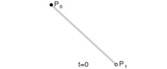
Quadratic Bézier curve

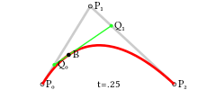
Cubic Bézier curve


4.5.2 Drawing Bézier curves
Draw a quadratic Bézier curve:
quadraticCurveTo(cp1x, cp1y, x, y)
Description:
- Parameters 1 and 2: control point coordinates
- Parameters 3 and 4: end point coordinates

Draw a cubic Bézier curve:
bezierCurveTo(cp1x, cp1y, cp2x, cp2y, x, y)
Description:
- Parameters 1 and 2: coordinates of control point 1
- Parameters 3 and 4: coordinates of control point 2
- Parameters 5 and 6: coordinates of the end point
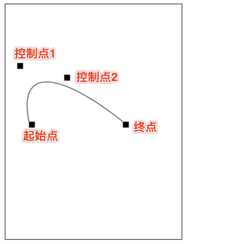
5. Adding Styles and Colors
In the previous chapter on drawing rectangles, only the default lines and colors were used.
If you want to color a shape, there are two important properties that can do it.
-
fillStyle = colorSet the fill color of the shape. -
strokeStyle = colorSet the color of the shape outline.
Notes:
- 1. color can be a string representing a CSS color value, a gradient object, or a pattern object.
- 2. By default, the line and fill colors are both black.
- 3. Once you set the value of strokeStyle or fillStyle, this new value becomes the default for newly drawn shapes. If you want to give each shape a different color, you need to reset the value of fillStyle or strokeStyle.
fillStyle

strokeStyle

Transparency
globalAlpha = transparencyValue: This property affects the transparency of all shapes in the canvas. Valid values range from 0.0 (fully transparent) to 1.0 (fully opaque), default is 1.0.
globalAlphaThis property is quite efficient when you need to draw many shapes with the same transparency. However, I think using rgba() to set transparency is better.
1、line style
Line width. It can only be a positive value. Default is 1.0.
The line connecting the start point and end point is the center,The top and bottom each occupy half of the line width.。

2. lineCap = type
Line cap style.
There are 3 values:
-
butt: The end of the line segment ends with a square. -
round: The end of the line segment ends with a circle. square: The end of the line segment ends with a square, but a rectangular area is added whose width is the same as the line segment and whose height is half the line thickness.var lineCaps = ["butt", "round", "square"]; for (var i = 0; i < 3; i++){ ctx.beginPath(); ctx.moveTo(20 + 30 * i, 30); ctx.lineTo(20 + 30 * i, 100); ctx.lineWidth = 20; ctx.lineCap = lineCaps[i]; ctx.stroke(); } ctx.beginPath(); ctx.moveTo(0, 30); ctx.lineTo(300, 30); ctx.moveTo(0, 100); ctx.lineTo(300, 100) ctx.strokeStyle = "red"; ctx.lineWidth = 1; ctx.stroke();
3. lineJoin = type
Within the same path, set the style of the joints between lines.
There are 3 values.
round,bevel和miter：-
roundDraw the shape of the corner by filling an additional sector whose center is at the end of the connected part. The radius of the rounded corner is the width of the line segment. -
bevelFill an additional triangular-based area at the end of the connected part; each part has its own independent rectangular corner. -
miter(Default) Extend the outer edges of the connected parts so that they intersect at a point, forming an additional diamond-shaped area.function draw(){ var canvas = document.getElementById('tutorial'); if (!canvas.getContext) return; var ctx = canvas.getContext("2d"); var lineJoin = ['round', 'bevel', 'miter']; ctx.lineWidth = 20; for (var i = 0; i < lineJoin.length; i++){ ctx.lineJoin = lineJoin[i]; ctx.beginPath(); ctx.moveTo(50, 50 + i * 50); ctx.lineTo(100, 100 + i * 50); ctx.lineTo(150, 50 + i * 50); ctx.lineTo(200, 100 + i * 50); ctx.lineTo(250, 50 + i * 50); ctx.stroke(); } } draw(); -
fillText(text, x, y [, maxWidth])Fill the specified text at the specified (x, y) position; the maximum width for drawing is optional. -
strokeText(text, x, y [, maxWidth])Draw a text border at the specified (x, y) position; the maximum width for drawing is optional.var ctx; function draw(){ var canvas = document.getElementById('tutorial'); if (!canvas.getContext) return; ctx = canvas.getContext("2d"); ctx.font = "100px sans-serif" ctx.fillText("天若有情", 10, 100); ctx.strokeText("天若有情", 10, 200) } draw(); -
font = valueThe style we currently use to draw text. This string uses the same syntax as theCSS fontproperty. The default font is10px sans-serif。 -
textAlign = valueText alignment option. Optional values include:start,end,left,rightorcenter. Default value isstart。 -
textBaseline = valueBaseline alignment option, optional values include:top,hanging,middle,alphabetic,ideographic,bottom. Default value isalphabetic。。 -
direction = valueText direction. Possible values include:ltr,rtl,inherit. Default value isinherit。 -
The currently applied transformations (i.e., translation, rotation, and scaling)
-
strokeStyle,fillStyle,globalAlpha,lineWidth,lineCap,lineJoin,miterLimit,shadowOffsetX,shadowOffsetY,shadowBlur,shadowColor,globalCompositeOperation 的值 -
The current clipping path (
clipping path）
can be called any number of times
savemethod (similar to arrays'push())。 - a (m11): Horizontal scaling.
- b (m12): Horizontal skewing.
- c (m21): Vertical skewing.
- d (m22): Vertical scaling.
- e (dx): Horizontal moving.
- f (dy): Vertical moving.
Clear
canvasBefore drawing each frame of the animation, you need to clear everything. The simplest way to clear everything is theclearRect()method.Save
canvasstateIf during the drawing process you will changecanvasthe canvas state (color, moved coordinate origin, etc.), and if each frame should start from the original state, it is best to save thecanvasstate.Draw the animation graphicsThis step is the actual drawing of the animation frame
Restore
canvasstateIf you saved thecanvasstate earlier, you should restore it after drawing one frame.canvasstate.setInterval()setTimeout()requestAnimationFrame()

4. Dashed Lines
用
setLineDashThe method andlineDashOffsetproperty are used to define dashed line styles.setLineDashThe method accepts an array to specify the alternation of line segments and gaps;lineDashOffsetThe property sets the starting offset.function draw(){ var canvas = document.getElementById('tutorial'); if (!canvas.getContext) return; var ctx = canvas.getContext("2d"); ctx.setLineDash([20, 5]); //[solid line length, gap length] ctx.lineDashOffset = -0; ctx.strokeRect(50, 50, 210, 210); } draw();
Note: getLineDash() returns an array containing the current dashed line style, with a non-negative even length.
6. Drawing Text
Two Methods for Drawing Text
canvas provides two methods to render text:

Adding Styles to Text
7. Drawing Images
We can also
canvasdraw images directly on it.7.1 Creating an Image from Scratch
var img = new Image(); //Create an <img> element img.src = 'myImage.png'; //Set the image source addressAfter the script executes, the image starts loading.
Draw
img// 参数 1：要绘制的 img // 参数 2、3：绘制的 img 在 canvas 中的坐标 ctx.drawImage(img,0,0);
Note: Considering that the image is loaded from the network, if
drawImageat the time, the image has not been fully loaded, then nothing is done, and some browsers may throw an exception. So we should ensure that afterimgthe drawing is completed, thendrawImage。var img = new Image(); //Create an img element img.onload = function(){ ctx.drawImage(img, 0, 0) } img.src = 'myImage.png'; //Set the image source address7.2 Drawing
imgImages in the Tag Element
imgcannewIt can also come from our page's<img>tag.<img src="./美女.jpg" alt="" width="300"><br> <canvas id="tutorial" width="600" height="400"></canvas> function draw(){ var canvas = document.getElementById('tutorial'); if (!canvas.getContext) return; var ctx = canvas.getContext("2d"); var img = document.querySelector("img"); ctx.drawImage(img, 0, 0); } document.querySelector("img").onclick = function (){ draw(); }The first image is the one in the page's
<img>tag:
7.3 Scaling Images
drawImage()You can also add two more parameters:drawImage(image, x, y, width, height)
This method has 2 additional parameters:
width和height, these two parameters control the scale at which the image should be drawn when drawn into the canvas.ctx.drawImage(img, 0, 0, 400, 200)

7.4 Slicing (slice)
drawImage(image, sx, sy, sWidth, sHeight, dx, dy, dWidth, dHeight)
The first parameter is the same as the others; it is a reference to an image or another canvas.
The other 8 parameters:
The first 4 define the slice position and size of the image source, and the last 4 define the target display position and size of the slice.

8. Saving and Restoring State
Saving and restoring stateis an essential operation when drawing complex graphics.save()和restore()save和restoreThe method is used to save and restorecanvasstate, and it takes no parameters.
CanvasThe state is a snapshot of all styles and transformations applied to the current canvas.1. About save(): The canvas state is stored in a stack. Whenever the save() method is called, the current state is pushed onto the stack and saved.
A drawing state includes:
can be called any number of times
savemethod(similar to arrays'push())。2. About restore(): Every time the restore method is called, the last saved state is popped from the stack, and all settings are restored (similar to arrays'
pop())。var ctx; function draw(){ var canvas = document.getElementById('tutorial'); if (!canvas.getContext) return; var ctx = canvas.getContext("2d"); ctx.fillRect(0, 0, 150, 150); //Draw a rectangle using the default settings ctx.save(); //Save the default state ctx.fillStyle = 'red' //Make changes to the color based on the original configuration ctx.fillRect(15, 15, 120, 120); //Draw a rectangle using the new settings ctx.save(); //Save the current state ctx.fillStyle = '#FFF' //Change the color configuration again ctx.fillRect(30, 30, 90, 90); //Draw a rectangle using the new configuration ctx.restore(); //Reload the previous color state ctx.fillRect(45, 45, 60, 60); //Draw a rectangle using the previous configuration ctx.restore(); //Load the default color configuration ctx.fillRect(60, 60, 30, 30); //Draw a rectangle using the loaded configuration } draw();
9. Transformations
9.1 translate
translate(x, y)Used to move
canvas的the originto a specified position
translateThe method accepts two parameters.xis the horizontal offset,yis the vertical offset, as shown in the figure on the right.Saving the state before performing transformations is a good habit. In most cases, calling
restorethe method is much simpler than manually restoring the original state. Also, if you are doing translations in a loop but do not save and restorecanvasthe state, you may find in the end that something is missing, because it has probably gone beyondcanvasthe scope.Note:
translateWhat is moved iscanvasthe coordinate origin of the canvas (coordinate transformation).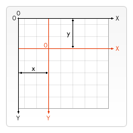
var ctx; function draw(){ var canvas = document.getElementById('tutorial1'); if (!canvas.getContext) return; var ctx = canvas.getContext("2d"); ctx.save(); //Save the state before the origin is translated ctx.translate(100, 100); ctx.strokeRect(0, 0, 100, 100) ctx.restore(); //Restore to the initial state ctx.translate(220, 220); ctx.fillRect(0, 0, 100, 100) } draw();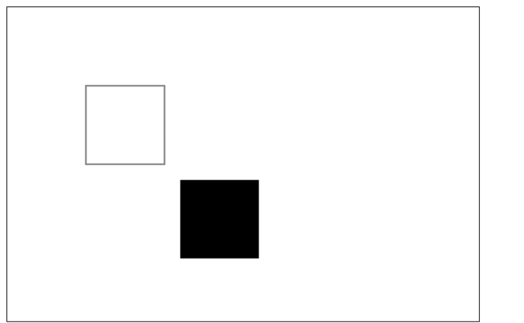
9.2 rotate
rotate(angle)
Rotate the coordinate axes.
This method accepts only one parameter: the rotation angle, which is clockwise, in radians.
The center of rotation is the coordinate origin.
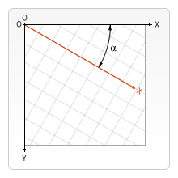
var ctx; function draw(){ var canvas = document.getElementById('tutorial1'); if (!canvas.getContext) return; var ctx = canvas.getContext("2d"); ctx.fillStyle = "red"; ctx.save(); ctx.translate(100, 100); ctx.rotate(Math.PI / 180 * 45); ctx.fillStyle = "blue"; ctx.fillRect(0, 0, 100, 100); ctx.restore(); ctx.save(); ctx.translate(0, 0); ctx.fillRect(0, 0, 50, 50) ctx.restore(); } draw();
9.3 scale
scale(x, y)
We use it to increase or decrease the number of pixels of the shape in
canvasthe canvas, to scale shapes and bitmaps down or up.scaleThe method accepts two parameters.x,yThey are the scaling factors for the horizontal axis and the vertical axis, respectively, and both must be positive values. A value smaller than 1.0 means shrinking, larger than 1.0 means enlarging, and a value of 1.0 has no effect.By default,
canvas1 unit in the canvas is 1 pixel. For example, if we set the scaling factor to 0.5, 1 unit becomes 0.5 pixels, so the drawn shape will be half of the original. Similarly, when set to 2.0, 1 unit becomes 2 pixels, and the drawing result is the shape enlarged 2 times.9.4 transform (transformation matrix)
transform(a, b, c, d, e, f)
 var ctx; function draw(){ var canvas = document.getElementById('tutorial1'); if (!canvas.getContext) return; var ctx = canvas.getContext("2d"); ctx.transform(1, 1, 0, 1, 0, 0); ctx.fillRect(0, 0, 100, 100); } draw();
var ctx; function draw(){ var canvas = document.getElementById('tutorial1'); if (!canvas.getContext) return; var ctx = canvas.getContext("2d"); ctx.transform(1, 1, 0, 1, 0, 0); ctx.fillRect(0, 0, 100, 100); } draw();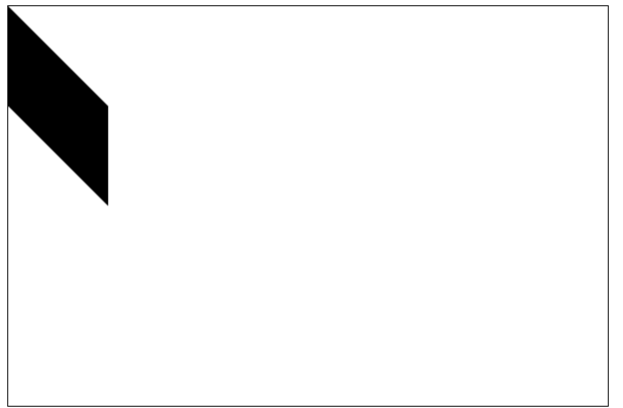
10. Compositing
In all the previous examples, we always draw one shape on top of another. For many other cases, doing only this is far from enough. For example, for composited graphics, the drawing order can be restricted. However, we can use the globalCompositeOperation property to change this situation.
globalCompositeOperation = type
var ctx; function draw(){ var canvas = document.getElementById('tutorial1'); if (!canvas.getContext) return; var ctx = canvas.getContext("2d"); ctx.fillStyle = "blue"; ctx.fillRect(0, 0, 200, 200); ctx.globalCompositeOperation = "source-over"; //Global composite operations ctx.fillStyle = "red"; ctx.fillRect(100, 100, 200, 200); } draw();注: In the following demonstration, blue is the original, and red is the new one.
type is one of the following 13 string values:
1. This is the default setting; the new image will cover the original image.
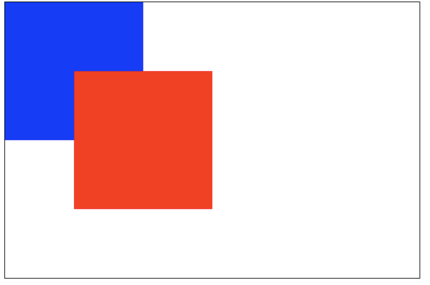
2. source-in
Only the overlapping part of the new image and the original image will appear; all other areas become transparent. (Including other old image areas will also be transparent)
3. source-out
Only shows the parts where the new image and the old image do not overlap; the rest is all transparent. (The old image is not displayed either)
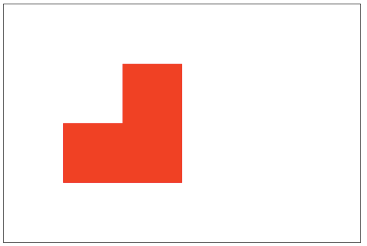
4. source-atop
The new image only shows the overlapping area with the old image. The old image can still be displayed.

5. destination-over
The new image will be below the old image.

6. destination-in
Only the old image in the overlapping part of the new and old images is displayed; all other areas are transparent.

7. destination-out
Only the parts where the old image and the new image do not overlap. Note that it displays parts of the old image.

8. destination-atop
The old image only displays the overlapping part, and the new image will be displayed below the old image.

9. lighter
Both the new and old images are displayed, but the colors in the overlapping area are processed additively.
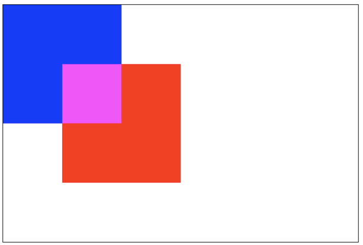
10. darken
Keeps the darkest pixels in the overlapping part. (Each color channel is compared, taking the smallest)
blue: #0000ff red: #ff0000
So the color of the overlapping part:#000000。

11. lighten
Ensures the brightest pixels in the overlapping part. (Each color channel is compared, taking the largest)
blue: #0000ff red: #ff0000
So the color of the overlapping part:#ff00ff。

12. xor
The overlapping part becomes transparent.

13. copy
Only the new image is kept; everything else is cleared (becomes transparent).

11. Clipping Paths
clip()
Convert an already created path into a clipping path.
The function of a clipping path is a mask. Only the area inside the clipping path is displayed; the area outside the clipping path is hidden.
Note:clip() can only mask images drawn after this method is called. If the image was drawn before the clip() method call, masking cannot be achieved.
 var ctx; function draw(){ var canvas = document.getElementById('tutorial1'); if (!canvas.getContext) return; var ctx = canvas.getContext("2d"); ctx.beginPath(); ctx.arc(20,20, 100, 0, Math.PI * 2); ctx.clip(); ctx.fillStyle = "pink"; ctx.fillRect(20, 20, 100,100); } draw();
var ctx; function draw(){ var canvas = document.getElementById('tutorial1'); if (!canvas.getContext) return; var ctx = canvas.getContext("2d"); ctx.beginPath(); ctx.arc(20,20, 100, 0, Math.PI * 2); ctx.clip(); ctx.fillStyle = "pink"; ctx.fillRect(20, 20, 100,100); } draw();
12. Animation
Basic Steps of Animation
Controlling Animation
We can use the
canvasmethods or custom methods to draw the image onto thecanvascanvas. Normally, we can see the drawing result only after the script execution ends. For example, we cannot complete an animation inside aforloop.That is, in order to perform animation, we need some methods that can execute redraws at scheduled times.
Generally, the following three methods are used:
Case 1: Solar System
let sun; let earth; let moon; let ctx; function init(){ sun = new Image(); earth = new Image(); moon = new Image(); sun.src = "sun.png"; earth.src = "earth.png"; moon.src = "moon.png"; let canvas = document.querySelector("#solar"); ctx = canvas.getContext("2d"); sun.onload = function (){ draw() } } init(); function draw(){ ctx.clearRect(0, 0, 300, 300); //Clear all contents /*Draw the Sun*/ ctx.drawImage(sun, 0, 0, 300, 300); ctx.save(); ctx.translate(150, 150); //Draw the Earth's orbit ctx.beginPath(); ctx.strokeStyle = "rgba(255,255,0,0.5)"; ctx.arc(0, 0, 100, 0, 2 * Math.PI) ctx.stroke() let time = new Date(); //Draw the Earth ctx.rotate(2 * Math.PI / 60 * time.getSeconds() + 2 * Math.PI / 60000 * time.getMilliseconds()) ctx.translate(100, 0); ctx.drawImage(earth, -12, -12) //Draw the Moon's orbit ctx.beginPath(); ctx.strokeStyle = "rgba(255,255,255,.3)"; ctx.arc(0, 0, 40, 0, 2 * Math.PI); ctx.stroke(); //Draw the Moon ctx.rotate(2 * Math.PI / 6 * time.getSeconds() + 2 * Math.PI / 6000 * time.getMilliseconds()); ctx.translate(40, 0); ctx.drawImage(moon, -3.5, -3.5); ctx.restore(); requestAnimationFrame(draw); }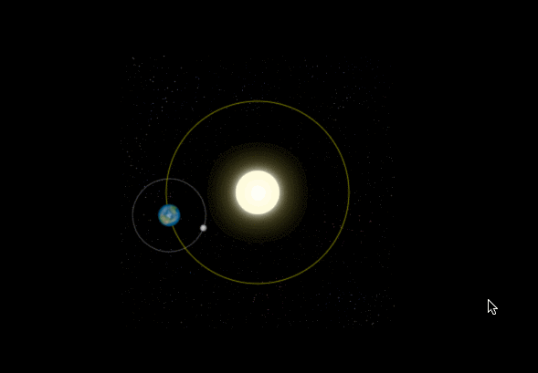
Case 2: Analog Clock
init(); function init(){ let canvas = document.querySelector("#solar"); let ctx = canvas.getContext("2d"); draw(ctx); } function draw(ctx){ requestAnimationFrame(function step(){ drawDial(ctx); //Draw the dial drawAllHands(ctx); //Draw the hour, minute, and second hands requestAnimationFrame(step); }); } /*Draw the hour, minute, and second hands*/ function drawAllHands(ctx){ let time = new Date(); let s = time.getSeconds(); let m = time.getMinutes(); let h = time.getHours(); let pi = Math.PI; let secondAngle = pi / 180 * 6 * s; //Calculate the radians of the second hand let minuteAngle = pi / 180 * 6 * m + secondAngle / 60; //Calculate the radians of the minute hand let hourAngle = pi / 180 * 30 * h + minuteAngle / 12; //Calculate the radians of the hour hand drawHand(hourAngle, 60, 6, "red", ctx); //Draw the hour hand drawHand(minuteAngle, 106, 4, "green", ctx); //Draw the minute hand drawHand(secondAngle, 129, 2, "blue", ctx); //Draw the second hand } /*Draw the hour hand, minute hand, or second hand * Parameter 1: the angle of the hand to draw * Parameter 2: the length of the hand to draw * Parameter 3: the width of the hand to draw * Parameter 4: the color of the hand to draw * Parameter 4: ctx **/ function drawHand(angle, len, width, color, ctx){ ctx.save(); ctx.translate(150, 150); //Translate the origin of the coordinate axes to the original center ctx.rotate(-Math.PI / 2 + angle); //Rotate the coordinate axes. The x-axis is the angle of the hand. ctx.beginPath(); ctx.moveTo(-4, 0); ctx.lineTo(len, 0); //Draw the hand along the x-axis ctx.lineWidth = width; ctx.strokeStyle = color; ctx.lineCap = "round"; ctx.stroke(); ctx.closePath(); ctx.restore(); } /*Draw the dial*/ function drawDial(ctx){ let pi = Math.PI; ctx.clearRect(0, 0, 300, 300); //Clear all contents ctx.save(); ctx.translate(150, 150); //Move the coordinate origin to the original center ctx.beginPath(); ctx.arc(0, 0, 148, 0, 2 * pi); //Draw the circle ctx.stroke(); ctx.closePath(); for (let i = 0; i < 60; i++){//Draw the tick marks. ctx.save(); ctx.rotate(-pi / 2 + i * pi / 30); //Rotate the coordinate axes. The positive direction of the x-axis starts from the upward direction. ctx.beginPath(); ctx.moveTo(110, 0); ctx.lineTo(140, 0); ctx.lineWidth = i % 5 ? 2 : 4; ctx.strokeStyle = i % 5 ? "blue" : "red"; ctx.stroke(); ctx.closePath(); ctx.restore(); } ctx.restore(); }
Try it »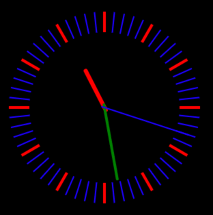
Original author: 做人要厚道2013
Original URL: https://blog.csdn.net/u012468376/article/details/73350998
-
Click me to share notes
<p style="font-size:14px;">Notes must extend this article's content!</p><br> <p style="font-size:12px;"><a href="../tougao.html" target="_blank">To submit an article, click here</a></p> <p style="font-size:14px;"><a href="./runoob-user-test-intro.html" target="_blank">How to get a registration invitation code</a></p> <h3 class="text-muted"><i class="fa fa-info-circle" aria-hidden="true"></i> Before sharing notes, you must <a href=".." class="runoob-pop">login</a>!</h3> <p><a href="./runoob-user-test-intro.html" target="_blank">How to get a registration invitation code</a></p>